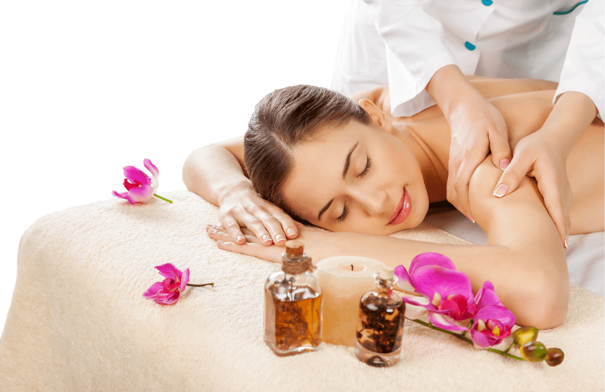

Aromaterapeutická masáž
Je skutočne veľmi jemná, príjemná, oddychová a uvoľňujúca masáž, vhodná najmä pri bolestiach chrbta a celého tela, ktoré vznikajú následkom každodenného preťaženia a stresovania. Masíruje sa kvalitným parafínovým olejom. Do neho sa pridáva 100% esenciálny olej podľa vášho výberu. Vďaka liečivým účinkom týchto olejov a vďaka jemným a pomalým masážnym ťahom pôsobí relaxačná aromaterapeutická masáž až do hĺbky celého bytia človeka. Pri pravidelnom absolvovaní výrazne zlepšuje stav pokožky, dýchacie problémy, problémy s pohybovým aparátom a iné zdravotné ťažkosti. Pri tejto masáži vás samozrejme najskôr upúta vôňa, čoskoro však budete pociťovať aj mnoho ďalších príjemných a pre zdravie pozitívnych účinkov, pretože esenciálne oleje prenikajú pokožkou veľmi rýchlo a ich účinok na telo trvá omnoho dlhšie. Preto si tieto oleje po masáži nezmývajte aspoň 4 hodiny. Dajte im čas, aby sa dokonale vstrebali a odovzdali vám zo seba všetko prospešné.
Pre koho je vhodná?
 Aromaterapeutická masáž je vhodná pri dlhodobom preťažení a nervovom vyčerpaní, rovnako aj pre prepracovaných, vystresovaných a napätých ľudí. Pôsobí proti depresii a nespavosti, pomáha zlepšovať trávenie a je vhodná pre veľmi citlivých jedincov, ktorým by sa iná masáž zdala bolestivá a nepríjemná. Je prospešná pri ochoreniach pohybového systému a svalového aparátu, pri migréne, cervikokraniálnom a cervikobrachiálnom syndróme. Pomáha pri deformáciách chrbtice, chybných držaniach tela, reumatických chorobách a po úrazoch a operáciách na kostiach a kĺboch. Ďalej pomáha pri tvorbe jaziev po popáleninách, pri poruchách hybnosti a po mozgovej príhode.
Pre koho nie je vhodná?
Aromaterapeutická masáž je nevhodná pre ľudí s akútnymi horúčkovitými, infekčnými a vírusovými ochoreniami, akútnymi zápalovými ochoreniami, pri poraneniach, infekciách kože a plesňových ochoreniach. Neodporúča sa aplikovať na postihnuté miesta po zápaloch žíl a trombózach a u ľudí s pokročilou artériosklerózou. Tiež by sa nemala vykonávať pri hnačkových ochoreniach a krvácaní v stolici, ani pri akútnom onkologickom ochorení. V prípade alergie na niektoré esenciálne oleje alebo ich zložky sa masáž neodporúča.
Po masáži je dôležité dodržať niekoľko odporúčaní, aby sa maximalizovali jej priaznivé účinky:
- Vypite postupne aspoň pol litra čistej vody – pomôže to telu s detoxikáciou a hydratáciou.
- Rešpektujte svoje telo – doprajte si oddych, ak to budete potrebovať, alebo sa vyberte na príjemnú prechádzku, ak máte chuť.
- Vyhnite sa sprchovaniu – nechajte vzácne oleje pôsobiť aspoň 4 hodiny po masáži.
- Obmedzte príjem toxínov – neodporúča sa fajčiť, ani piť kávu či alkohol po masáži.
- Nedávajte si ťažké jedlo – počkajte aspoň 3 hodiny, kým si dáte niečo sýtejšie.
- Nepúšťajte sa do náročných aktivít – po masáži si neplánujte fyzicky alebo psychicky náročné úlohy.